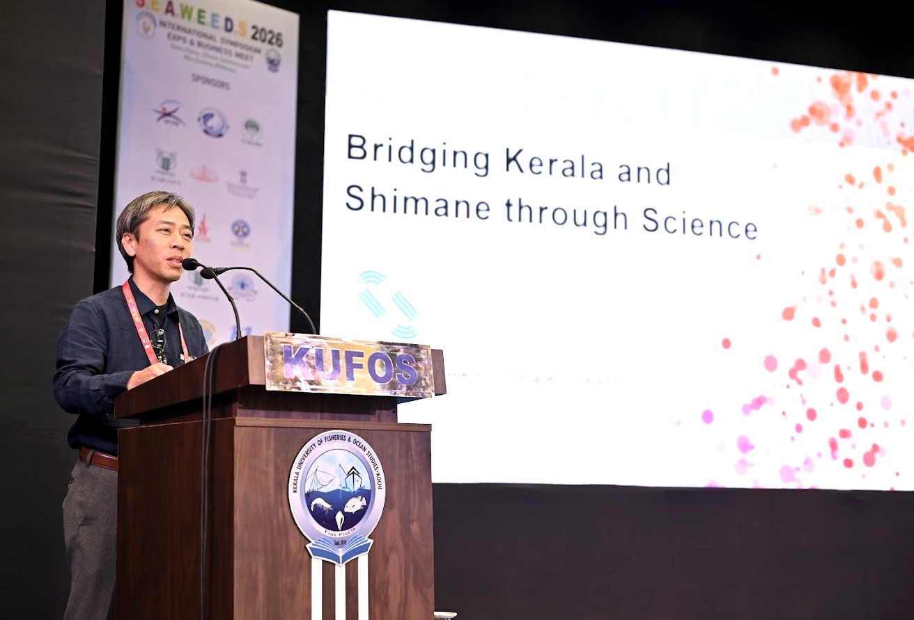

食べられる分子カプセルで
健康機能食品を科学する
「オメガ3って何？」「分子カプセルってどういうこと？」——
専門用語ゼロから、ステップ式・3Dモデルつきで解説しています。
私の研究では、シクロデキストリンと呼ばれる環状オリゴ糖を使っています。シクロデキストリンは、分子中央に疎水性の空洞を持つ、カプセル状の分子です。その空洞の中に、さまざまな分子やイオンを選択的に取り込む「包接」という現象を利用し、食品化学分野での応用研究を進めています。シクロデキストリンは食べられる化合物でもあり、この「食べられる分子カプセル」を活用することが研究の柱です。
私たちの研究の中心にあるのは、「食べられる分子カプセル」シクロデキストリンです。 エゴマ油などの健康成分をこのカプセルに包むことで、 体への吸収効率を高め、酸化しにくく、扱いやすい食品素材へと変えることができます。 「健康によいと分かっていても、続けにくい」——その課題を、分子レベルで解決することを目指しています。
分子カプセルで油を「粉末化」
液体のエゴマ油をサラサラの粉末に変えることに成功。 酸化しにくく、料理や食品への添加がしやすくなります。
扱いやすさの改善オメガ3脂肪酸の吸収率を向上
シクロデキストリンと一緒に摂取することで、 血液中のオメガ3濃度が有意に上昇することをラット実験で確認。
体への届きやすさ臓器の脂肪酸バランスへの影響
血液だけでなく、肝臓・脳などの臓器でも オメガ3系脂肪酸の組成比が変化することを明らかにしました。
健康機能の科学的根拠「食べられる」からこそ安全・実用的
シクロデキストリンは食品添加物として認可された化合物。 医薬品ではなく「食品の科学」として研究を進めています。
食品化学・応用研究α・β・γシクロデキストリンとさまざまな分子との包接錯体形成を研究してきました。NMR分光法や熱力学的解析を通じて、分子認識の機構と選択性に関する基礎研究を行ってきました。
詳細 →
γ-シクロデキストリンとエゴマ油から包接錯体を調製し、エゴマ油の粉末化・酸化防止・熱安定性の向上に成功しました。食品としての扱いやすさを大幅に改善します。
詳細 →
γ-CD包接体として摂取することで血漿中のα-リノレン酸濃度が有意に上昇することをラット・マウス実験で確認。その詳細な機構解明に挑んでいます。
詳細 →
エゴマ油をγ-シクロデキストリン（γ-CD）で包接して摂取することで、血液中だけでなくさまざまな臓器の脂肪酸組成に影響を与えることが明らかになりました。
詳細 →
Lab Life
実験・測定
HPLC・LC-MS・GC-MSなどを使い、脂肪酸やアミノ酸を定性・定量分析します。データ解析にはExcel・R・Pythonを活用します。 機器の扱い方から丁寧に指導するので、初心者でも安心です。
写真を追加予定
lab-seminar.jpg
週次ゼミ
週1回、全員が進捗を報告。英語論文の輪読も行い、 読む力・話す力を同時に鍛えます。

学会発表
国内外の学会で研究成果を発表します。 写真はインドで開催された国際学会（SEAWEEDS 2026）での発表の様子。学部生も積極的に参加できる環境です。
Student Voice — 学生の声
化学が得意ではなかったけど、実験が楽しくなりました。 先生がいつでも質問に答えてくれるので安心して研究できています。
食品と化学がつながっているのが面白い。 自分の研究が将来の健康食品につながるかもと思うとモチベーションが上がります。
生体高分子の分子認識メカニズムを分子間相互作用の観点から解説し、人工分子認識素材の機能・応用を概説する。島根大学 学部生向け。
SDGsにおける化学分野の英語文献・論文を読む力を養う。オムニバス形式で実施。
重量分析・容量分析・統計的データ処理・グラフ作成など、生命工学実験の基礎を体験的に習得する。
包接化合物と化学物質との平衡定数決定に必要な分析手法と機器の扱い方を体験的に学ぶ。
修士課程向け。分子の構造と機能に関する高度な理解を目的としたオムニバス講義（第6〜9週担当）。
博士課程2年生を対象に口頭・ポスター発表を実施。研究の進捗発表を通じてプレゼンテーション能力と研究議論力を養う。
島根大学発スタートアップ株式会社 S-Nanotech Co-Creation（SNCC）は、島根大学のナノテク関連シーズの事業化を目的に藤田恭久教授らが設立した企業です。その事業の一つが、γ-シクロデキストリンとエゴマ油の包接技術を活かしたエゴマ油粉末事業。簡単に摂取できる新しい形態のエゴマ油を社会に届けることを目指しています。
吉清は技術顧問として参画し、研究室の知見を社会実装につなげる取り組みを続けています。現在は地元サプリメント企業とのコラボ商品開発に挑戦中。技術移転・協業にご興味のある企業・団体からのお問い合わせを歓迎しています。
SNCC 公式サイト →メールを送る
件名に「研究室見学希望」と書いて送ってください。所属・学年も添えると返信がスムーズです。
日程を調整する
数日以内に返信します。見学・相談の日時を一緒に決めましょう。
来室・オンライン面談
研究室を見学しながら、研究内容・配属の流れについてざっくばらんに話しましょう。
どんな内容でも歓迎です。
「まだ迷っている」「少し話を聞きたいだけ」でも構いません。
授業や研究室説明会の前後に直接声をかけていただいても大丈夫です。